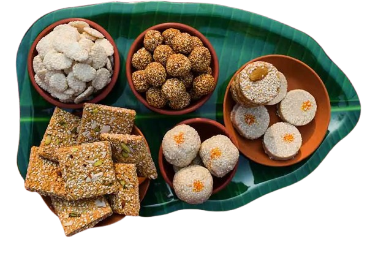

Happy Makar Sankranti!
- Makar Sankranti, a Hindu holiday celebrating the entrance of the Sun into the astrological sign of makara, is celebrated all over India with different traditions. But it is especially known for kite flying. In Gujarat the festival is called Uttarayan and is celebrated grandly by flying kites.
- This festival is also known as a harvest festival, as farmers thank nature for good crops. On this day, people wake up early, take a holy bath, and wear new clothes. Special sweets made from jaggery and sesame seeds are prepared and shared with family, friends, and neighbors.
